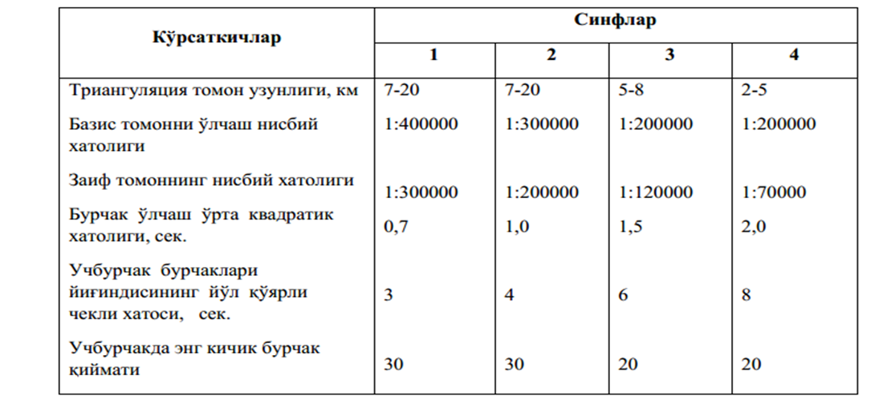
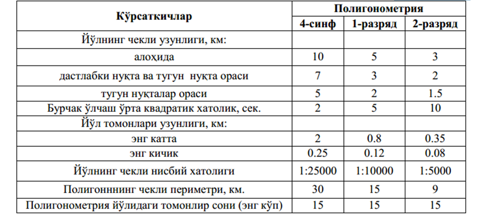

3-амалий иш Мавзу: Тармоқлар турлари ва уларнинг аниқлигига бўлган талаблар
Планли ва баландлик инженер – геодезик тармоқлар шаҳарлар ҳудудида, йирик саноат ва энергетик
объектларда тузилиб, лойиҳавий — қидирув ва қурилиш ишларини бажаришда асос бўлиб хизмат
қилади. Планли инженер-геодезик тармоқлар триангуляция, полигонометрия, чизиқли - бурчак,
трилатерация ва геодезик қурилиш тўри кўринишида барпо этилади.
Планли инженер-геодезик тармоқлар аниқлиги, зичлиги ва барқарорлигига бўлган талаблар
турлича бўлади. Бу қидирув, лойиҳалаш, қуришда ва инженер-геодезик иншоотлардан фойдаланишда
ечиладиган масалаларнинг турлилигига боғлиқ. Инженер-геодезик тармоқларни барпо этишда
давлат таянч тармоқларидан асос сифатида фойдаланилади.
Давлат планли геодезик тармоғи 1,2,3 ва 4 синфларга бўлинади ва улар бир-биридан бурчак
ва масофа ўлчаш аниқлиги, тармоқ томонлари узунликлари, ҳамда барпо этиш тартиби билан
бир-биридан фарқ қилади.
Давлат планли геодезик тормоқлари тавсифи 1-жадвалда келтирилган.

Полигонометрия тармоғи тавсифи 2-жадвалда келтирилган.

Гидроузел қурилиши босқичида гидротехник иншоотларни режалаш
ишларини бажариш учун махсус гидротехник триангуляция барпо қилиш
талаб этилади.
Гидротехник триангуляциянинг ўзига хослиги базис томон ва учбурчакнинг қисқа томонлари
орасидаги бурчак ўлчаш аниқликларига юқори талаб қўйилиши ҳисобланади. Бу томонлар узунлиги
0,5-1,5 км, бурчак ўлчаш аниқлиги 1-1,5, нисбий хатолик 1/200000-1/25000Они ташкил
этади.
Йирик кўприк қурилишларида геодезик планли асос сифатида махсус тармоқ – кўприк
триангуляцияси барпо этилади.
Кўприк триангуляцияси асосан бир ёки иккита туртбурчак кўринишида тузилади. Базис томон
узунлиги 1:200000-1:300000 нисбий хатоликда ўлчанади, учбурчак бурчаклари эса 1-2 хатоликда
ўлчанади.
Тунел трассасини жойга кўчириш учун планли асос бўлиб махсус тармоқ-тунел триангуляцияси
хизмат қилади.
У чўзилган учбурчаклар занжиридан иборат бўлиб, иккала учи базис томон билан таянган,
томонлар узунлиги 2-7 км, бурчак ўлчаш ўрта квадратик хатолиги 1 га тенг, энг заиф томон
нисбий хатолиги 1:150000.
Ноёб иншоотлар (кўп қаватли бинолар, миноралар, радиотелескоплар,
юқори ҳароратли гелиоқурилмалар) қурилишида жуда қисқа томонли (25-50м) микротрилатерация
ёки микротриангуляция тармоғи барпо этилади. Жойда тармоқ пунктлари 0,1-0,5 мм аниқликда
белгиланади.